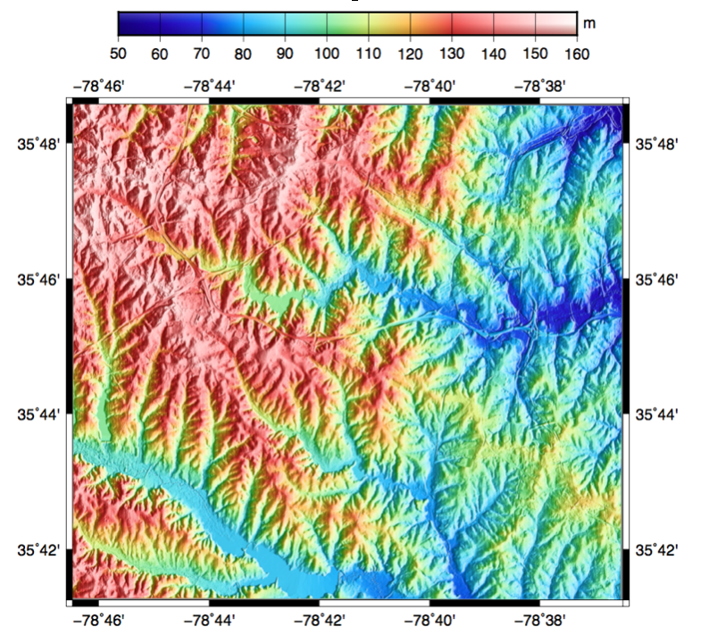

Nota
This project is only included on the OSGeoLive virtual machine disk (VMDK)
GMT Quickstart¶
GMT is a collection of tools that allow users to manipulate (x,y) and (x,y,z) data sets (including filtering, trend fitting, gridding, projecting, etc.) and produce Encapsulated PostScript File (EPS) illustrations ranging from simple x-y plots through contour maps to artificially illuminated surfaces and 3-D perspective views in black and white, gray tone, hachure patterns, and 24-bit color.
In this quick GMT tutorial we will use a digital terrain model (DTM) to generate a shaded relief map.
Contents
Create a map¶
As our input dataset we will use a DTM from the GRASS GIS example dataset, which is accessible by GDAL using the GDAL-GRASS driver.
From a quick look at the DTM metadata, open a terminal and use the GDAL command gdalinfo:
gdalinfo /home/user/grassdata/nc_basic_spm_grass7/PERMANENT/cellhd/elevation
We can see the DTM is in a projected coordinate system and the data range is between 50 and 160 meters.
We can convert the DTM in a GMT Compatible netCDF file format with gdal_translate as follow:
gdal_translate -of GMT /home/user/grassdata/nc_basic_spm_grass7/PERMANENT/cellhd/elevation elevation.gmt
For our GMT example we will first transform the dataset into geographic coordinates Longitude-Latitude (EPSG:4326) using the gdalwarp command:
gdalwarp elevation.gmt geo_elevation.gmt -t_srs EPSG:4326
Make a color palette¶
To assign a color map to our grid we can make a GMT color palette tables with the makecpt command. We will set the range and number of colors with the flag -T and assign a colormap with the flag -C.
gmt makecpt -Chaxby -T50/160/10 -Z > elevation.cpt
You can experiment with other colortables, see man gmt makecpt for a complete list.
Define the gradient¶
For our shaded relief example we need to specify show how the color intensity is distributed along the grid. To do so, we will compute the directional derivative, or gradient, from our grid using the grdgradient command. In grdgradient we will use the -Ne flag to normalize the output using a cumulative Laplace distribution and the -A flag for Azimuthal direction for a directional derivative.
gmt grdgradient geo_elevation.gmt -Ne0.8 -A100 -fg -Ggradient.nc
The output is a netCDF file which can then be used as color intensity by the grdimage command as follow:
gmt grdimage geo_elevation.gmt -Igradient.nc -JM6i -P -Ba -Celevation.cpt -K > GMT_tut_OSGeoLive.ps
Display the color bar¶
Finally we can add a colorbar with psscale:
gmt psscale -DjTC+w5i/0.25i+h+o0/-1i -Rgeo_elevation.gmt -J -Celevation.cpt -I0.4 -By+lm -O >> GMT_tut_OSGeoLive.ps
Here the flag -D is used to select the colorbar position TC: Top Center, the size 5x0.25 expressed in inches i the orientation by h: horizontal and the flag -By to set a label m on the y axis.
The output ps document should look like:
{kind=link}
Things to try¶
Look at some of the examples found in: /usr/share/doc/gmt/examples
Go through the GMT tutorial and follow the several examples available in the src code. There are 30 example jobs built in, to test:
Open a terminal, then
cp -R /usr/share/doc/gmt/examples gmt-examples
cd gmt-examples/ex20
./example_20.sh
To view the results in Ghostview (http://www.gnu.org/software/gv/) , use command gv. Type q to quit Ghostview.
gv example_20.ps
What next?¶
- Have a read of the local documentation stored in: /usr/share/doc/gmt/html/
- Website: https://gmt.soest.hawaii.edu
- Support: https://gmt.soest.hawaii.edu/projects/gmt/boards/1